步骤 1
打开顾客端首页
进入「肌松大师-顾客端」，默认页是预约首页。三入口：症状搜索、门店、推拿师。
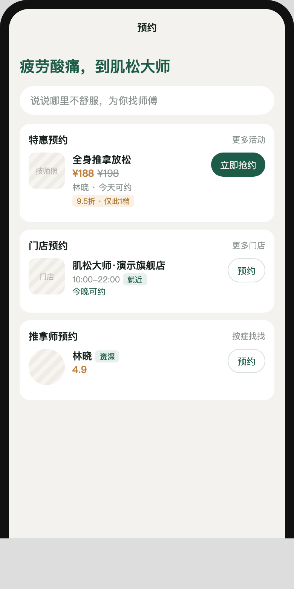
按顾客预约 → 技师服务 → 前台收银 → 店长审批的真实路径整理。每一步对应开发者工具里的页面。数据用本机 dev 目录：演示旗舰店、林晓/陈默/周可、全身推拿放松 ¥198。
进入「肌松大师-顾客端」，默认页是预约首页。三入口：症状搜索、门店、推拿师。

进入症状路由。点「头颈肩」后出现推荐项目「肩颈专项疏通」。
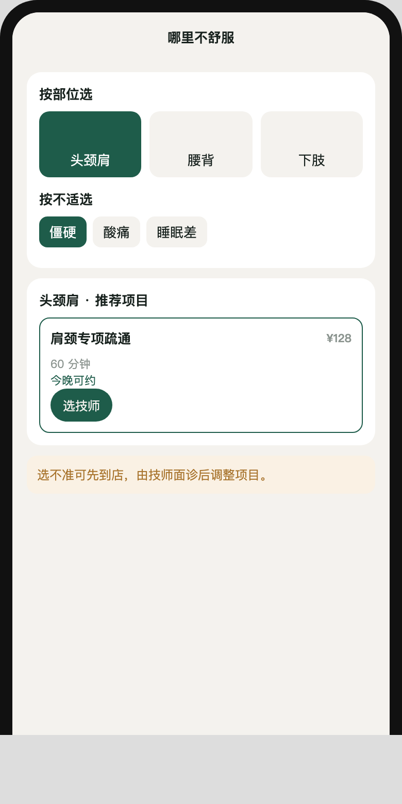
选「肌松大师·演示旗舰店」，再选项目，进入选时段。
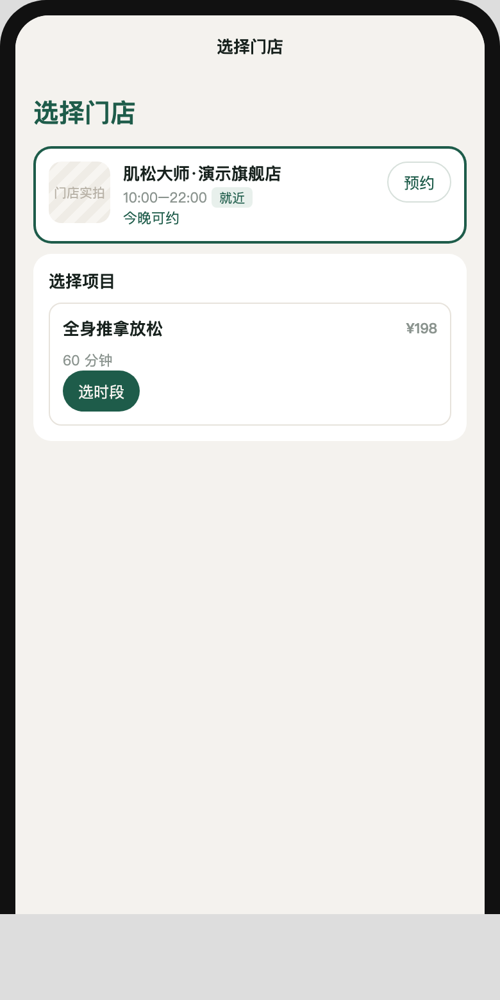
选「林晓 / 资深」，再选可做项目。
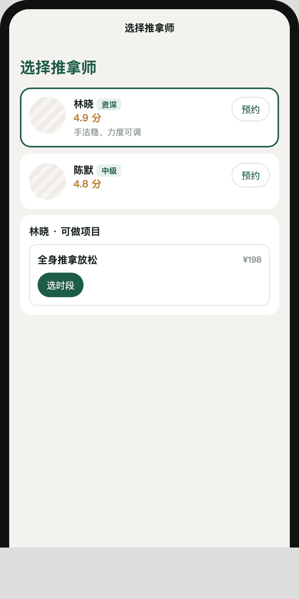
四态格子：绿可约、玉已约、铜锁定、灰不可约。点 19:30，底栏「去预约」。
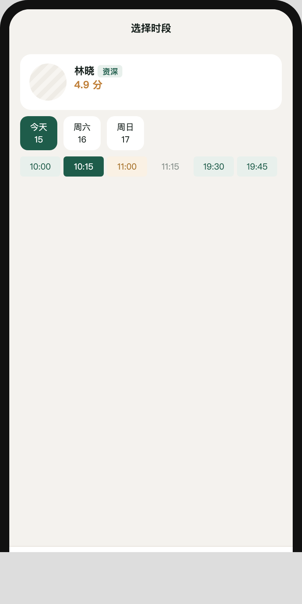
锁单 15 分钟倒计时。微信支付，点「立即支付」。
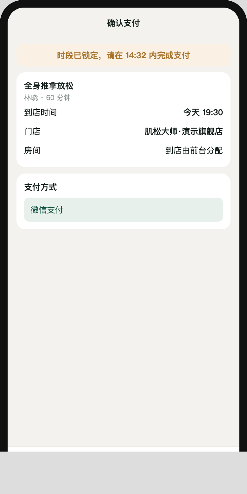
状态变为已预约，点「查看订单」进我的。

下次调理、核销码、改约（转前台）、取消、理疗档案。储值展示 ¥0。
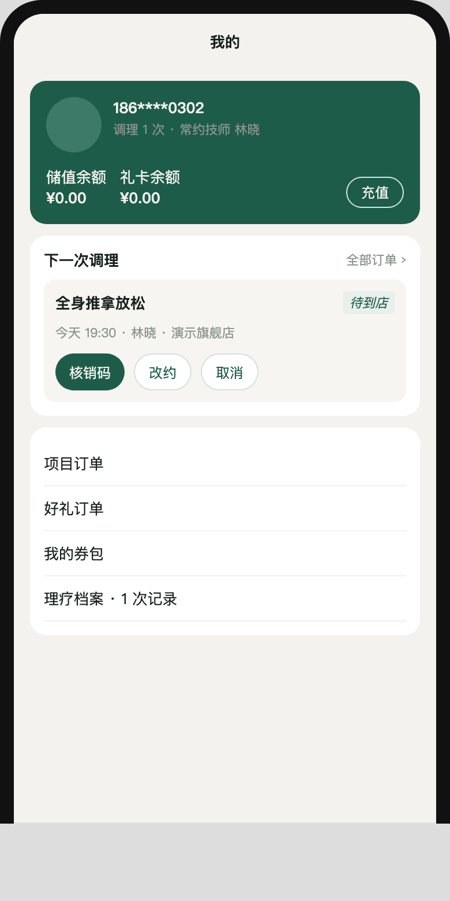
四个入口：技师工作台、前台收银、店长概览、门店排班。
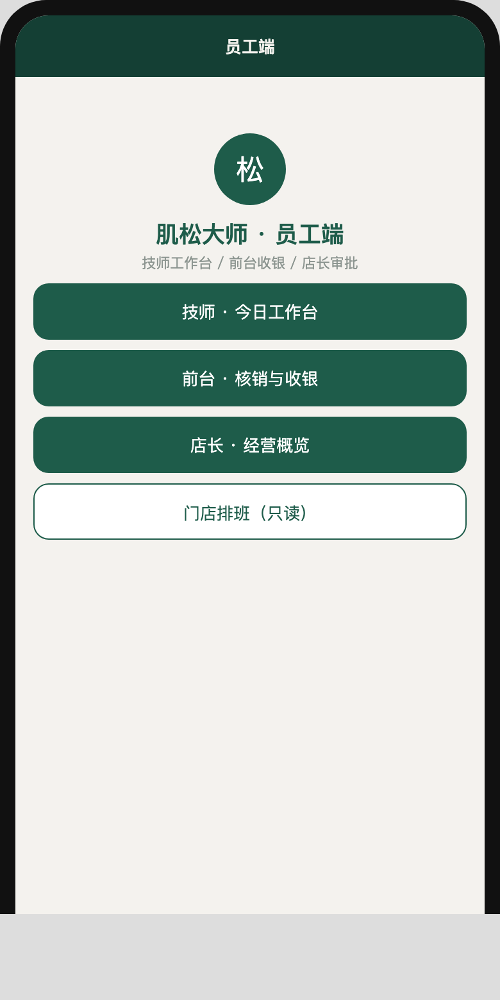
下一单卡片：谁 / 几点 / 哪张床。点「开始服务」。时间轴可点进服务页。
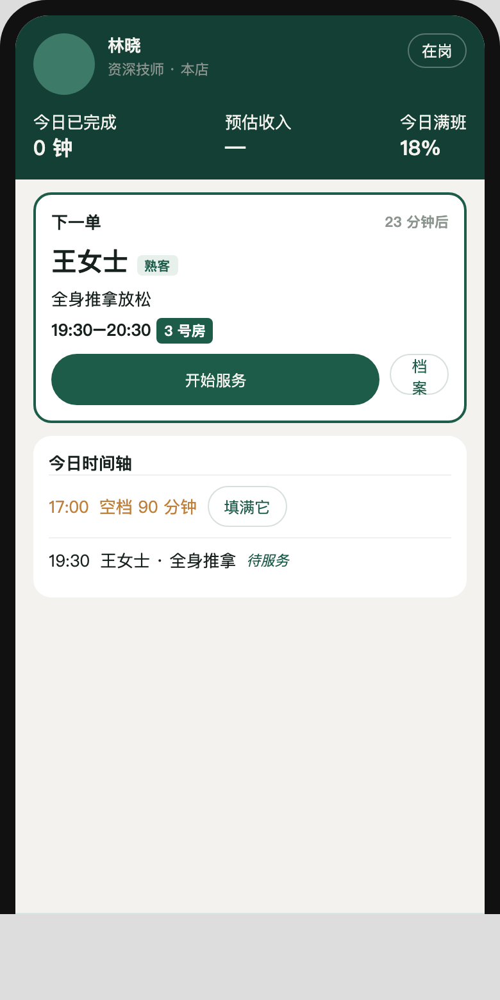
倒计时、申请加钟（跳前台）、主诉/手法/力度、口头告知后「提交记录并结单」。
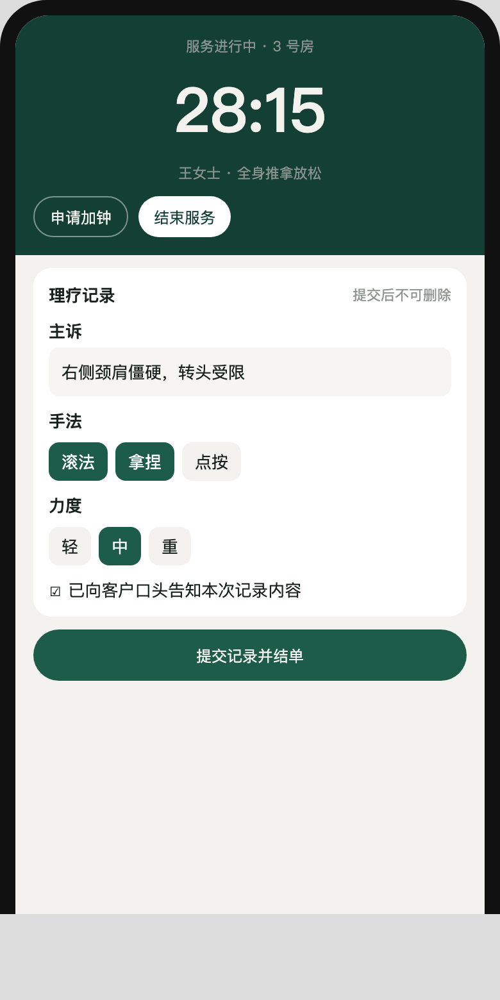
查单号/手机后核销。散客支持现金或微信收款码。
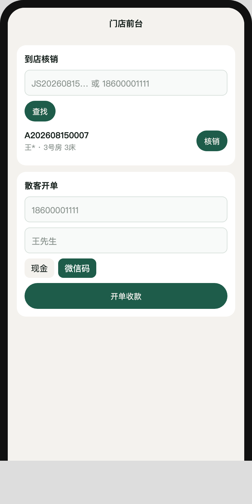
核销或开单后填订单 ID，选动作提交。失败进人工队列。
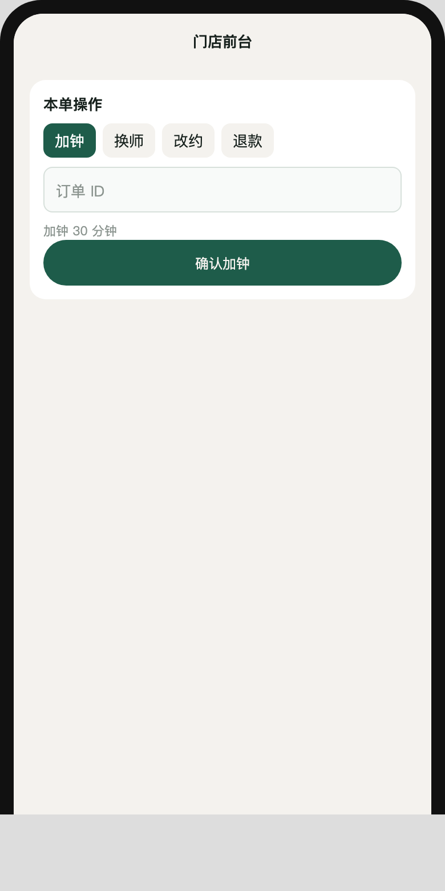
满班率、待我审批（同意/驳回）、门店实时。
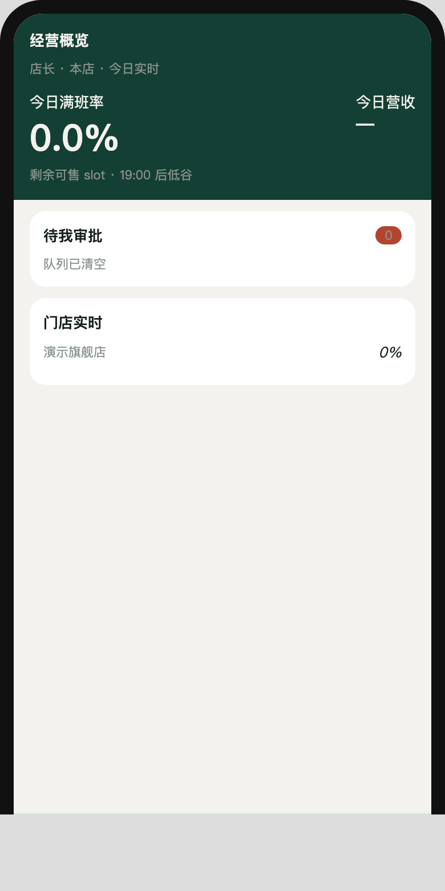
从工作台或店长底栏「排班」进入，对照技师档期，不能改约。
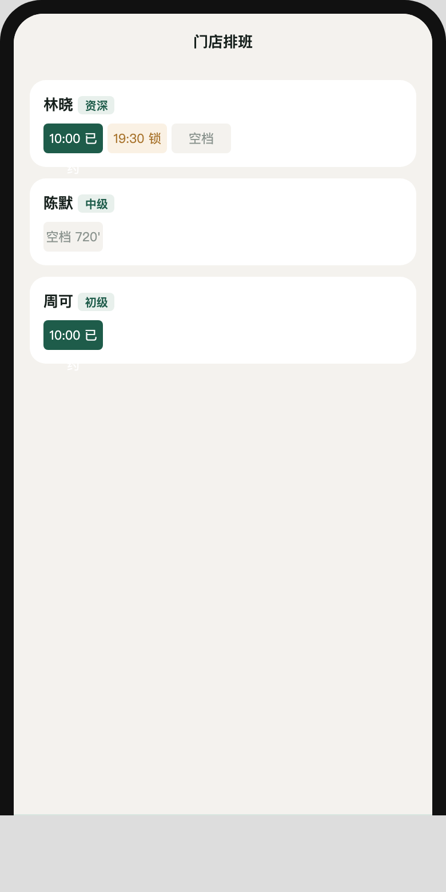